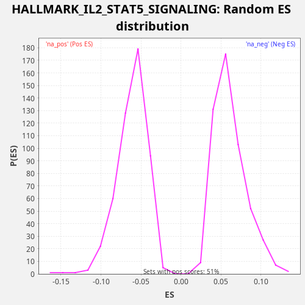

Profile of the Running ES Score & Positions of GeneSet Members on the Rank Ordered List
The same image in compressed SVG format
| Dataset | TCGA |
| Phenotype | NoPhenotypeAvailable |
| Upregulated in class | na_neg |
| GeneSet | HALLMARK_IL2_STAT5_SIGNALING |
| Enrichment Score (ES) | -0.26227313 |
| Normalized Enrichment Score (NES) | -4.2751107 |
| Nominal p-value | 0.0 |
| FDR q-value | 0.0 |
| FWER p-Value | 0.0 |
| SYMBOL | RANK IN GENE LIST | RANK METRIC SCORE | RUNNING ES | CORE ENRICHMENT | |
|---|---|---|---|---|---|
| 1 | DHRS3 | 113 | 6.583 | -0.0009 | No |
| 2 | SNX14 | 149 | 5.534 | 0.0023 | No |
| 3 | TNFRSF21 | 193 | 4.791 | 0.0051 | No |
| 4 | FAH | 311 | 3.610 | 0.0040 | No |
| 5 | GSTO1 | 386 | 3.168 | 0.0051 | No |
| 6 | P4HA1 | 388 | 3.157 | 0.0102 | No |
| 7 | IKZF2 | 627 | 2.169 | 0.0026 | No |
| 8 | HK2 | 756 | 1.789 | 0.0008 | No |
| 9 | BATF | 825 | 1.653 | 0.0023 | No |
| 10 | SPRED2 | 964 | 1.418 | 0.0000 | No |
| 11 | NDRG1 | 1147 | 1.157 | -0.0046 | No |
| 12 | AGER | 1266 | 0.997 | -0.0059 | No |
| 13 | PLEC | 1457 | 0.845 | -0.0109 | No |
| 14 | PRNP | 1724 | 0.662 | -0.0201 | No |
| 15 | IL4R | 1972 | 0.546 | -0.0282 | No |
| 16 | AHR | 2014 | 0.527 | -0.0253 | No |
| 17 | MYO1C | 2265 | 0.430 | -0.0336 | No |
| 18 | FURIN | 2601 | 0.325 | -0.0464 | No |
| 19 | S100A1 | 3272 | 0.191 | -0.0773 | No |
| 20 | CAPN3 | 3477 | 0.159 | -0.0831 | No |
| 21 | ST3GAL4 | 3584 | 0.145 | -0.0837 | No |
| 22 | IFNGR1 | 3861 | 0.116 | -0.0934 | No |
| 23 | CD44 | 4399 | 0.072 | -0.1171 | No |
| 24 | BMPR2 | 4485 | 0.066 | -0.1165 | No |
| 25 | SMPDL3A | 4507 | 0.065 | -0.1125 | No |
| 26 | ETV4 | 4563 | 0.061 | -0.1103 | No |
| 27 | CDC42SE2 | 4897 | 0.042 | -0.1231 | No |
| 28 | CD81 | 5111 | 0.033 | -0.1294 | No |
| 29 | BHLHE40 | 5226 | 0.029 | -0.1304 | No |
| 30 | MXD1 | 6170 | 0.008 | -0.1759 | No |
| 31 | PUS1 | 6193 | 0.007 | -0.1720 | No |
| 32 | FLT3LG | 6385 | 0.005 | -0.1771 | No |
| 33 | IKZF4 | 6886 | 0.001 | -0.1988 | No |
| 34 | CASP3 | 6951 | 0.001 | -0.1971 | No |
| 35 | DCPS | 7133 | 0.000 | -0.2017 | No |
| 36 | PNP | 7281 | 0.000 | -0.2045 | No |
| 37 | CYFIP1 | 7295 | 0.000 | -0.2000 | No |
| 38 | IGF1R | 7401 | 0.000 | -0.2006 | No |
| 39 | RNH1 | 7417 | -0.000 | -0.1962 | No |
| 40 | SERPINB6 | 7504 | -0.000 | -0.1957 | No |
| 41 | POU2F1 | 7551 | -0.000 | -0.1931 | No |
| 42 | CKAP4 | 7788 | -0.001 | -0.2006 | No |
| 43 | ITGA6 | 8099 | -0.002 | -0.2121 | No |
| 44 | IRF6 | 8117 | -0.002 | -0.2079 | No |
| 45 | CDCP1 | 8233 | -0.003 | -0.2090 | No |
| 46 | PDCD2L | 8366 | -0.004 | -0.2109 | No |
| 47 | SERPINC1 | 8395 | -0.005 | -0.2073 | No |
| 48 | SNX9 | 8453 | -0.005 | -0.2052 | No |
| 49 | NOP2 | 8511 | -0.006 | -0.2032 | No |
| 50 | PTRH2 | 8560 | -0.007 | -0.2006 | No |
| 51 | AHCY | 8776 | -0.010 | -0.2070 | No |
| 52 | NCOA3 | 9058 | -0.014 | -0.2170 | No |
| 53 | SPP1 | 9092 | -0.015 | -0.2136 | No |
| 54 | MAPKAPK2 | 9096 | -0.015 | -0.2087 | No |
| 55 | TIAM1 | 9532 | -0.025 | -0.2269 | No |
| 56 | PRAF2 | 9644 | -0.028 | -0.2277 | No |
| 57 | MUC1 | 10238 | -0.049 | -0.2544 | No |
| 58 | PLPP1 | 10376 | -0.055 | -0.2567 | No |
| 59 | SPRY4 | 10411 | -0.057 | -0.2534 | No |
| 60 | ITGAE | 10461 | -0.059 | -0.2509 | No |
| 61 | SYNGR2 | 10467 | -0.060 | -0.2460 | No |
| 62 | ITIH5 | 10584 | -0.066 | -0.2471 | No |
| 63 | SWAP70 | 10587 | -0.066 | -0.2421 | No |
| 64 | GPX4 | 10671 | -0.072 | -0.2414 | No |
| 65 | ALCAM | 10967 | -0.090 | -0.2521 | No |
| 66 | CCND2 | 11001 | -0.092 | -0.2488 | No |
| 67 | UMPS | 11056 | -0.095 | -0.2465 | No |
| 68 | AHNAK | 11068 | -0.096 | -0.2420 | No |
| 69 | ARL4A | 11172 | -0.103 | -0.2424 | No |
| 70 | RGS16 | 11479 | -0.127 | -0.2537 | No |
| 71 | SH3BGRL2 | 11621 | -0.140 | -0.2562 | No |
| 72 | SLC1A5 | 11656 | -0.143 | -0.2528 | No |
| 73 | GATA1 | 11770 | -0.153 | -0.2538 | No |
| 74 | IGF2R | 11929 | -0.172 | -0.2571 | Yes |
| 75 | AMACR | 11930 | -0.172 | -0.2520 | Yes |
| 76 | PRKCH | 12046 | -0.187 | -0.2531 | Yes |
| 77 | ANXA4 | 12125 | -0.196 | -0.2521 | Yes |
| 78 | PHTF2 | 12151 | -0.199 | -0.2483 | Yes |
| 79 | HIPK2 | 12315 | -0.222 | -0.2520 | Yes |
| 80 | BMP2 | 12328 | -0.223 | -0.2475 | Yes |
| 81 | SCN9A | 12355 | -0.227 | -0.2437 | Yes |
| 82 | MAP6 | 12373 | -0.230 | -0.2395 | Yes |
| 83 | GBP4 | 12783 | -0.305 | -0.2564 | Yes |
| 84 | PHLDA1 | 12790 | -0.305 | -0.2516 | Yes |
| 85 | CCND3 | 12821 | -0.310 | -0.2480 | Yes |
| 86 | BCL2L1 | 12922 | -0.330 | -0.2483 | Yes |
| 87 | ABCB1 | 12931 | -0.331 | -0.2436 | Yes |
| 88 | MAFF | 12942 | -0.335 | -0.2390 | Yes |
| 89 | SLC29A2 | 12968 | -0.341 | -0.2352 | Yes |
| 90 | TNFSF11 | 13073 | -0.365 | -0.2357 | Yes |
| 91 | RHOB | 13136 | -0.378 | -0.2339 | Yes |
| 92 | LCLAT1 | 13182 | -0.387 | -0.2312 | Yes |
| 93 | PIM1 | 13267 | -0.406 | -0.2305 | Yes |
| 94 | MAP3K8 | 13363 | -0.426 | -0.2305 | Yes |
| 95 | LRRC8C | 13393 | -0.436 | -0.2269 | Yes |
| 96 | PLSCR1 | 13395 | -0.437 | -0.2219 | Yes |
| 97 | TNFSF10 | 13411 | -0.440 | -0.2175 | Yes |
| 98 | IL3RA | 13422 | -0.443 | -0.2129 | Yes |
| 99 | NFKBIZ | 13530 | -0.473 | -0.2136 | Yes |
| 100 | TWSG1 | 13680 | -0.520 | -0.2164 | Yes |
| 101 | ITGAV | 13757 | -0.546 | -0.2154 | Yes |
| 102 | HUWE1 | 13798 | -0.560 | -0.2124 | Yes |
| 103 | PTCH1 | 13856 | -0.577 | -0.2103 | Yes |
| 104 | PLAGL1 | 13945 | -0.609 | -0.2099 | Yes |
| 105 | CAPG | 14033 | -0.645 | -0.2095 | Yes |
| 106 | LTB | 14129 | -0.686 | -0.2095 | Yes |
| 107 | SLC39A8 | 14236 | -0.735 | -0.2100 | Yes |
| 108 | MYC | 14274 | -0.756 | -0.2069 | Yes |
| 109 | LIF | 14390 | -0.818 | -0.2079 | Yes |
| 110 | GALM | 14483 | -0.865 | -0.2077 | Yes |
| 111 | ODC1 | 14569 | -0.913 | -0.2072 | Yes |
| 112 | XBP1 | 14640 | -0.955 | -0.2058 | Yes |
| 113 | CDC6 | 14767 | -1.034 | -0.2074 | Yes |
| 114 | CSF1 | 14784 | -1.042 | -0.2032 | Yes |
| 115 | GPR65 | 14806 | -1.056 | -0.1992 | Yes |
| 116 | TTC39B | 14812 | -1.061 | -0.1943 | Yes |
| 117 | NRP1 | 14837 | -1.082 | -0.1905 | Yes |
| 118 | NT5E | 14847 | -1.087 | -0.1858 | Yes |
| 119 | PLIN2 | 15074 | -1.244 | -0.1928 | Yes |
| 120 | CTSZ | 15242 | -1.368 | -0.1967 | Yes |
| 121 | DRC1 | 15248 | -1.374 | -0.1918 | Yes |
| 122 | LRIG1 | 15458 | -1.582 | -0.1979 | Yes |
| 123 | NCS1 | 15483 | -1.614 | -0.1941 | Yes |
| 124 | WLS | 15544 | -1.673 | -0.1922 | Yes |
| 125 | CA2 | 15558 | -1.692 | -0.1877 | Yes |
| 126 | RRAGD | 15618 | -1.756 | -0.1858 | Yes |
| 127 | UCK2 | 15648 | -1.785 | -0.1822 | Yes |
| 128 | TRAF1 | 15713 | -1.865 | -0.1805 | Yes |
| 129 | KLF6 | 15850 | -2.029 | -0.1827 | Yes |
| 130 | HOPX | 15891 | -2.098 | -0.1797 | Yes |
| 131 | RORA | 15926 | -2.144 | -0.1764 | Yes |
| 132 | PTGER2 | 15951 | -2.181 | -0.1726 | Yes |
| 133 | CISH | 16059 | -2.328 | -0.1732 | Yes |
| 134 | RABGAP1L | 16089 | -2.377 | -0.1696 | Yes |
| 135 | TNFRSF18 | 16102 | -2.399 | -0.1651 | Yes |
| 136 | P2RX4 | 16117 | -2.423 | -0.1608 | Yes |
| 137 | IFITM3 | 16134 | -2.450 | -0.1565 | Yes |
| 138 | ENO3 | 16182 | -2.530 | -0.1539 | Yes |
| 139 | PTH1R | 16185 | -2.534 | -0.1489 | Yes |
| 140 | CCNE1 | 16357 | -2.841 | -0.1529 | Yes |
| 141 | IL1RL1 | 16418 | -2.989 | -0.1510 | Yes |
| 142 | BCL2 | 16421 | -3.003 | -0.1460 | Yes |
| 143 | IL13 | 16449 | -3.044 | -0.1423 | Yes |
| 144 | CSF2 | 16484 | -3.111 | -0.1390 | Yes |
| 145 | GADD45B | 16503 | -3.137 | -0.1348 | Yes |
| 146 | SOCS2 | 16605 | -3.358 | -0.1351 | Yes |
| 147 | IL18R1 | 16621 | -3.390 | -0.1308 | Yes |
| 148 | TNFRSF4 | 16645 | -3.437 | -0.1269 | Yes |
| 149 | NFIL3 | 16659 | -3.457 | -0.1225 | Yes |
| 150 | SHE | 16674 | -3.483 | -0.1181 | Yes |
| 151 | FGL2 | 16806 | -3.843 | -0.1200 | Yes |
| 152 | GABARAPL1 | 16855 | -3.943 | -0.1175 | Yes |
| 153 | CDKN1C | 16970 | -4.261 | -0.1185 | Yes |
| 154 | EMP1 | 16982 | -4.288 | -0.1139 | Yes |
| 155 | SOCS1 | 17091 | -4.644 | -0.1146 | Yes |
| 156 | CD86 | 17218 | -5.105 | -0.1162 | Yes |
| 157 | ECM1 | 17256 | -5.251 | -0.1131 | Yes |
| 158 | CST7 | 17351 | -5.643 | -0.1130 | Yes |
| 159 | TNFRSF8 | 17426 | -5.965 | -0.1119 | Yes |
| 160 | MYO1E | 17429 | -5.984 | -0.1068 | Yes |
| 161 | SELP | 17554 | -6.539 | -0.1084 | Yes |
| 162 | ADAM19 | 17645 | -6.999 | -0.1081 | Yes |
| 163 | APLP1 | 17665 | -7.076 | -0.1040 | Yes |
| 164 | CD48 | 17707 | -7.278 | -0.1010 | Yes |
| 165 | TNFRSF1B | 17766 | -7.650 | -0.0990 | Yes |
| 166 | DENND5A | 17785 | -7.760 | -0.0949 | Yes |
| 167 | COL6A1 | 17794 | -7.790 | -0.0902 | Yes |
| 168 | IL10RA | 17833 | -8.032 | -0.0871 | Yes |
| 169 | BATF3 | 17897 | -8.415 | -0.0853 | Yes |
| 170 | COCH | 17903 | -8.460 | -0.0805 | Yes |
| 171 | CTLA4 | 17928 | -8.622 | -0.0766 | Yes |
| 172 | CCR4 | 17973 | -8.911 | -0.0739 | Yes |
| 173 | IL1R2 | 18010 | -9.187 | -0.0707 | Yes |
| 174 | RHOH | 18016 | -9.237 | -0.0658 | Yes |
| 175 | CXCL10 | 18064 | -9.663 | -0.0632 | Yes |
| 176 | CD83 | 18093 | -9.911 | -0.0596 | Yes |
| 177 | TGM2 | 18103 | -10.016 | -0.0549 | Yes |
| 178 | EOMES | 18113 | -10.153 | -0.0503 | Yes |
| 179 | IL2RA | 18132 | -10.358 | -0.0461 | Yes |
| 180 | SLC2A3 | 18160 | -10.600 | -0.0424 | Yes |
| 181 | ICOS | 18235 | -11.325 | -0.0413 | Yes |
| 182 | SYT11 | 18278 | -11.930 | -0.0384 | Yes |
| 183 | ENPP1 | 18367 | -13.373 | -0.0380 | Yes |
| 184 | IL2RB | 18381 | -13.541 | -0.0336 | Yes |
| 185 | PENK | 18410 | -13.965 | -0.0300 | Yes |
| 186 | TNFRSF9 | 18432 | -14.207 | -0.0260 | Yes |
| 187 | IRF4 | 18462 | -14.767 | -0.0224 | Yes |
| 188 | CD79B | 18494 | -15.449 | -0.0189 | Yes |
| 189 | GLIPR2 | 18500 | -15.601 | -0.0141 | Yes |
| 190 | IL10 | 18507 | -15.662 | -0.0093 | Yes |
| 191 | IRF8 | 18510 | -15.694 | -0.0042 | Yes |
| 192 | TLR7 | 18550 | -16.930 | -0.0012 | Yes |
| 193 | F2RL2 | 18587 | -18.457 | 0.0020 | Yes |
| 194 | SELL | 18619 | -19.628 | 0.0055 | Yes |
| 195 | GPR83 | 18769 | -35.042 | 0.0026 | Yes |

{kind=link}
{kind=link}